Le boitier s'imprime en PLA, sans support. C'est un modèle simple qui devrait se réaliser sans enjeu sur n'importe quel modèle d'imprimante 3D.
Le couvercle s'imprime lui aussi en PLA, sans support.
Assemblage
Préparer les prises
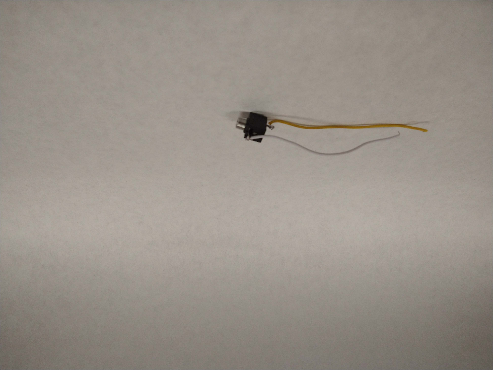
Préparer le bouton
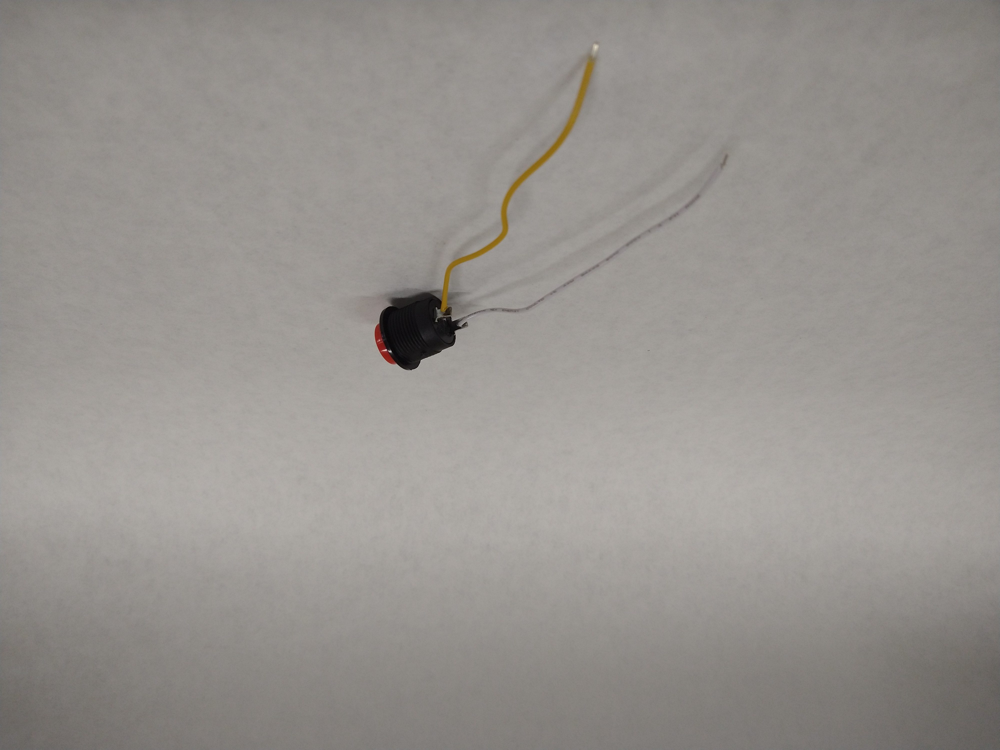
Préparer le neopixel
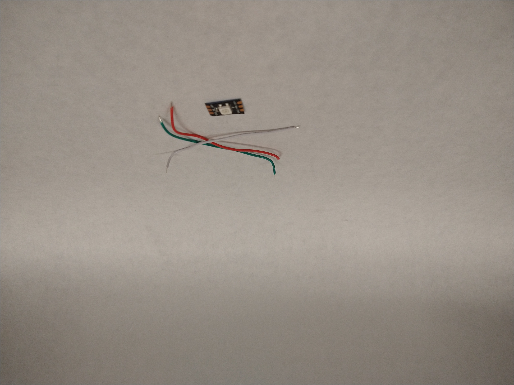
Préparation du boitier
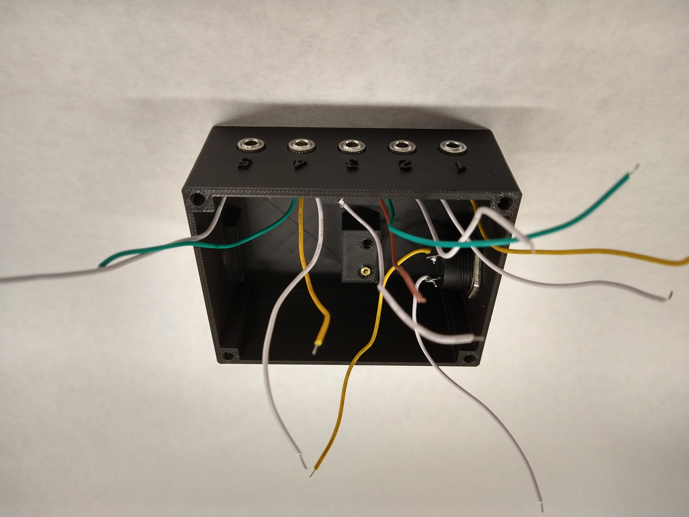
Soudure du Raspberry Pico
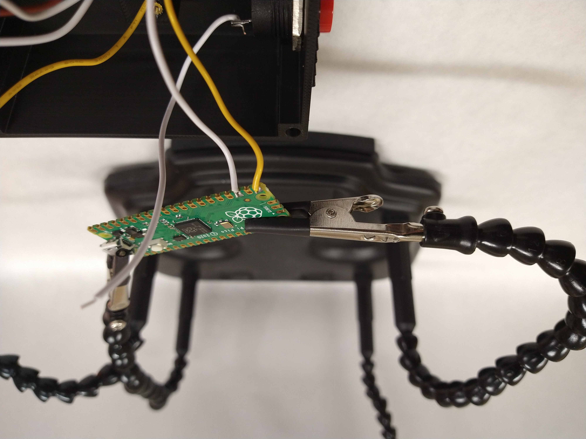
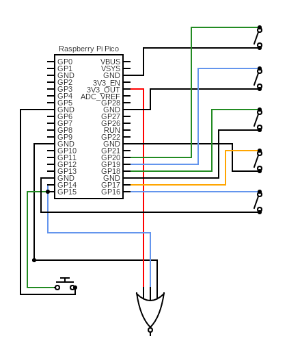
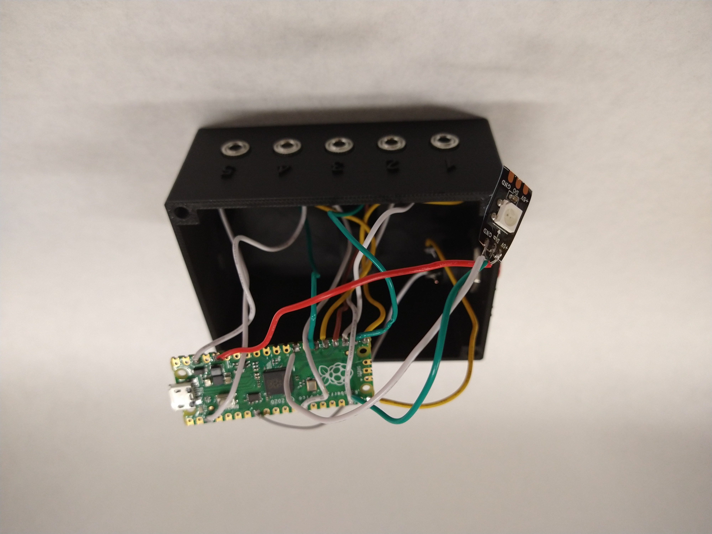
Finition
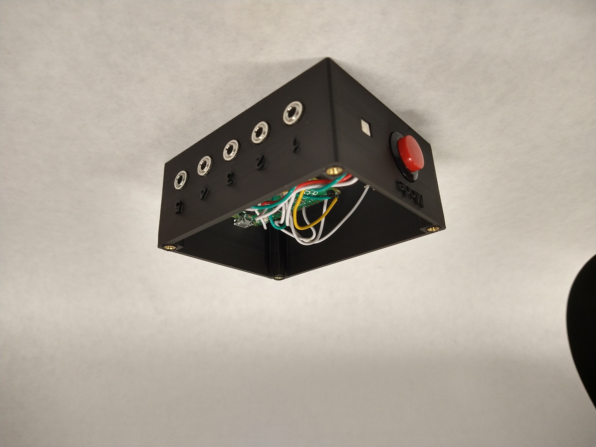
Vérification
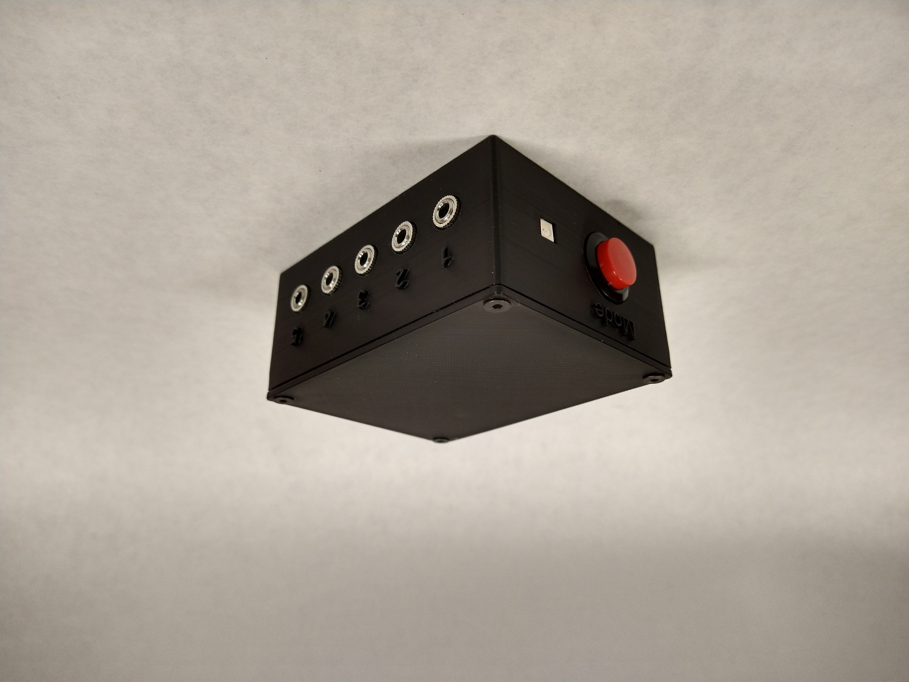
Préparation du microcontrôleur
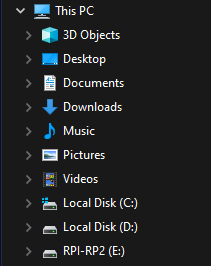
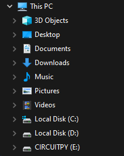
code.py file (do not rename it) and drag it onto the CIRCUITPY drive. This file contains all the programming necessary for the device to function correctly. When connected, the device will run this code, which dictates its operation.
">